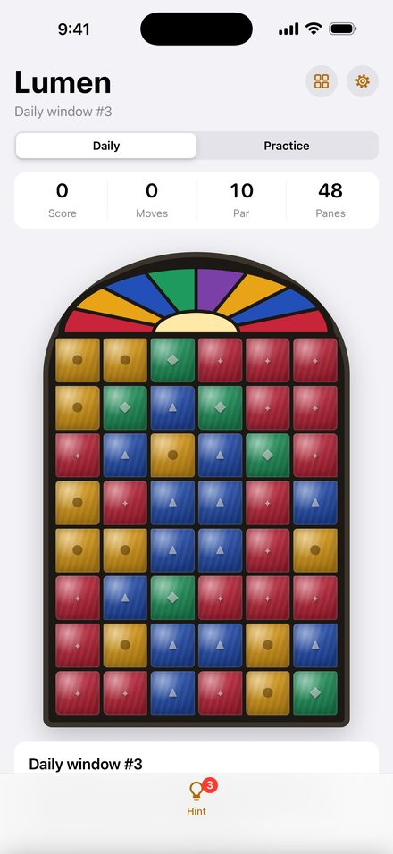
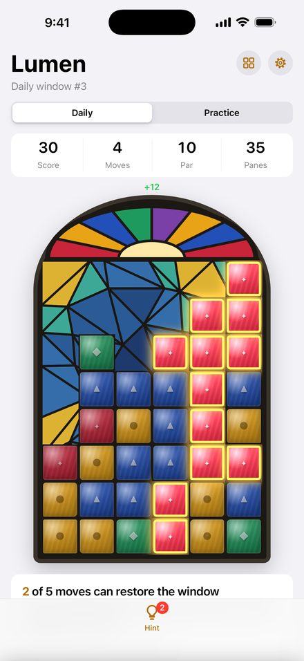
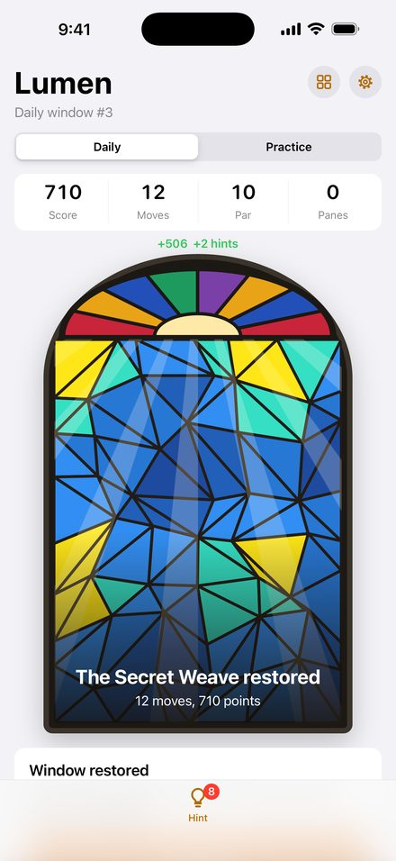
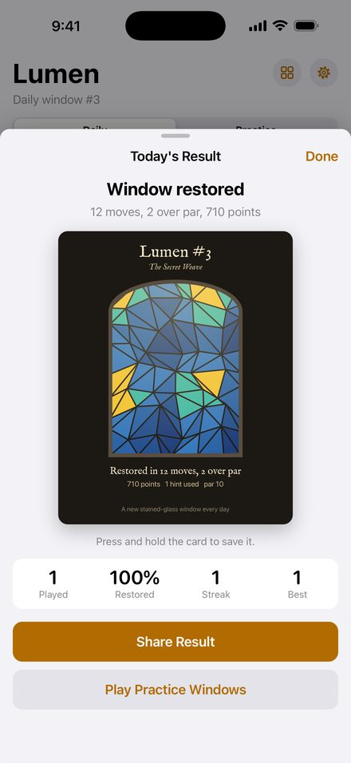

Lumen
A daily stained-glass puzzle
Tap touching panes of one color to clear them. Clear every pane and the light comes through, revealing a stained-glass window made just for that day. Everyone gets the same window, and you get one try.
Free, no account, no ads. The iPhone app is coming to the App Store.




How to play
- Tap two or more touching panes of the same color to clear them.
- Panes above drop down, and empty columns close in from the right.
- Clear every pane to restore the window. Bigger groups score more: a group of n panes is worth n × (n − 1).
- Stuck? A hint makes every move that can still restore the window glow. Earn more by clearing big groups and restoring windows.
- A new daily window arrives at midnight UTC. Practice windows are unlimited.